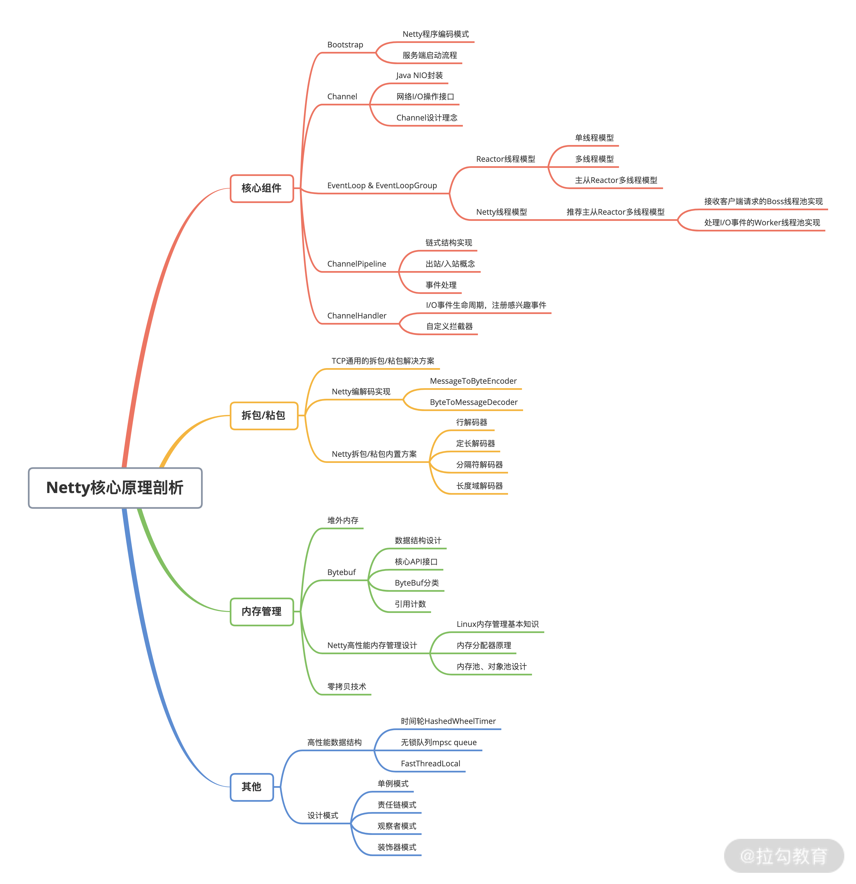

- 00 学好 Netty，是你修炼 Java 内功的必经之路.md.html
- 01 初识 Netty：为什么 Netty 这么流行？.md.html
- 02 纵览全局：把握 Netty 整体架构脉络.md.html
- 03 引导器作用：客户端和服务端启动都要做些什么？.md.html
- 04 事件调度层：为什么 EventLoop 是 Netty 的精髓？.md.html
- 05 服务编排层：Pipeline 如何协调各类 Handler ？.md.html
- 06 粘包拆包问题：如何获取一个完整的网络包？.md.html
- 07 接头暗语：如何利用 Netty 实现自定义协议通信？.md.html
- 08 开箱即用：Netty 支持哪些常用的解码器？.md.html
- 09 数据传输：writeAndFlush 处理流程剖析.md.html
- 10 双刃剑：合理管理 Netty 堆外内存.md.html
- 11 另起炉灶：Netty 数据传输载体 ByteBuf 详解.md.html
- 12 他山之石：高性能内存分配器 jemalloc 基本原理.md.html
- 13 举一反三：Netty 高性能内存管理设计（上）.md.html
- 14 举一反三：Netty 高性能内存管理设计（下）.md.html
- 15 轻量级对象回收站：Recycler 对象池技术解析.md.html
- 16 IO 加速：与众不同的 Netty 零拷贝技术.md.html
- 17 源码篇：从 Linux 出发深入剖析服务端启动流程.md.html
- 18 源码篇：解密 Netty Reactor 线程模型.md.html
- 19 源码篇：一个网络请求在 Netty 中的旅程.md.html
- 20 技巧篇：Netty 的 FastThreadLocal 究竟比 ThreadLocal 快在哪儿？.md.html
- 21 技巧篇：延迟任务处理神器之时间轮 HashedWheelTimer.md.html
- 22 技巧篇：高性能无锁队列 Mpsc Queue.md.html
- 23 架构设计：如何实现一个高性能分布式 RPC 框架.md.html
- 24 服务发布与订阅：搭建生产者和消费者的基础框架.md.html
- 25 远程通信：通信协议设计以及编解码的实现.md.html
- 26 服务治理：服务发现与负载均衡机制的实现.md.html
- 27 动态代理：为用户屏蔽 RPC 调用的底层细节.md.html
- 28 实战总结：RPC 实战总结与进阶延伸.md.html
- 29 编程思想：Netty 中应用了哪些设计模式？.md.html
- 30 实践总结：Netty 在项目开发中的一些最佳实践.md.html
- 31 结束语 技术成长之路：如何打造自己的技术体系.md.html
- 捐赠
00 学好 Netty，是你修炼 Java 内功的必经之路
你好，我是若地。我曾担任美团点评技术专家，是一名高性能组件发烧友，平时专注于基础架构中间件的研发工作，积累了丰富的分布式架构设计和调优经验。
我们知道网络层是架构设计中至关重要的环节，但 Java 的网络编程框架有很多（比如 Java NIO、Mina、Grizzy），为什么我这里只推荐 Netty 呢？
因为 Netty 是目前最流行的一款高性能 Java 网络编程框架，它被广泛使用在中间件、直播、社交、游戏等领域。目前，许多知名的开源软件也都将 Netty 用作网络通信的底层框架，如 Dubbo、RocketMQ、Elasticsearch、HBase 等。
为什么要学习 Netty？
讲到这里，你可能要问了：如果我的工作中涉及网络编程的内容并不多，那我是否还有必要花精力学习 Netty 呢？
其实在互联网大厂（阿里、腾讯、美团等）的中高级 Java 开发面试中，经常会问到涉及 Netty 核心技术原理的问题，比如：
- Netty 的高性能表现在哪些方面？对你平时的项目开发有何启发？
- Netty 中有哪些重要组件，它们之间有什么联系？
- Netty 的内存池、对象池是如何设计的？
- 针对 Netty 你有哪些印象比较深刻的系统调优案例？
这些问题看似简单，但如果你对 Netty 掌握不够深入，回答时就很容易“翻车”。我面试过很多求职者，虽然他们都有一定的 Netty 使用经验，但当深入探讨技术细节及如何解决项目中的实际问题时，就会发现大部分人只是简单使用，并没有深入掌握 Netty 的技术原理。如果你可以学好 Netty，掌握底层原理，一定会成为你求职面试的加分项。
而且通过 Netty 的学习，还可以锻炼你的编程思维，对 Java 其他的知识体系起到融会贯通的作用。
当年我刚踏入工作，领到的第一个任务是数据采集和上报。我尝试了各种解决方案最后都被主管否掉了，他说“不用那么麻烦，直接使用 Netty 就好了”。于是我一边学习一边完成工作，工作之余还会挤出时间研究 Netty 源码。
回想起研究源码的那段日子，虽然很辛苦，但仿佛为我打开了一扇 Java 新世界的大门，当我理解领悟 Netty 的设计原理之后，对 I/O 模型 、内存管理、线程模型、数据结构等当时理解起来有一定难度的知识，仿佛一瞬间“顿悟”了。而且在我日后再去学习 RocketMQ、Nginx、Redis 等优秀框架时，也明显感觉更加便捷、高效了。
因此，如果你想提升自己的技术水平并找到一份满意的工作，学习掌握 Netty 就非常重要。事实上，在平时的开发工作中，Netty 的易用性和可靠性也极大程度上降低了开发者的心智负担。
我在学生时代，写过不少网络应用，现在看来，非常冗长。当我熟练掌握 Netty 后，一切问题迎刃而解。Netty 对 Java NIO 进行了高级封装，简化了网络应用的开发过程，我们不再需要花费大量精力关注 Selector、SocketChannel、ServerSocketChannel 等繁杂的 API。
当我自己写网络应用时，拆包/粘包、数据编解码、TCP 断线重连等一系列问题都需要考虑到，而现在 Netty 给我们提供了现成的解决方案。此外遇到问题还可以在社区讨论，Netty 的迭代周期短修复问题快，其可靠性和健壮性被越来越多的公司所认可和采纳。
不客气地说，正是因为有 Netty 的存在，网络编程领域 Java 才得以与 C++ 并肩而立。
由以上几点出发，我想和你一起学习 Netty，希望在工作和求职的过程中能够为你提供帮助，也可以为你打开学习思路。
学习目标与困难
那么我们该如何学习 Netty 技术呢？作为初学者，你一定会有很多疑问或遇到一些问题：
- 缺乏网络相关的基础知识，学习 Netty 往往理解不深刻，始终不得其法；
- Netty 知识点非常多，网上资源比较零散，社区文档对初学者也不够友好，如何系统化学习 Netty；
- 看了这么多 Netty 的基础理论，落到项目开发中却依然毫无头绪；
- Netty 源码过于复杂，学习无从下手，抓不住重点，最终半途而废；
- 工作中缺少实践，仅仅学习理论知识很容易就忘记了。
在学习的过程中我也遇到了同样的问题，但幸运的是美团的工作经历让我有了很多实践和解决问题的机会。在这期间，我在系统设计方面不断有新的认知。
这里我想分享一些我的学习经验，供你一同学习。学习方法不但适合 Netty，也适合其他技术。希望通过这些经验，可以一同进步。
- 首先，兴趣是最好的老师，工作之余我一定会分配出至少 10% 的时间去思考和学习新的知识，像 Netty 如此优秀的学习资源当然不能放过。
- 其次，如果你工作中缺乏项目实战，其实也不必过于担心，可以尝试实现一些 MVP 的原型系统，例如 RPC、IM 即时聊天，HTTP 服务器等。不要觉得这是在浪费时间，实践出真知，在学习 Netty 的同时你也会得到很多收获。
- 再次，在学习源码之前，首先要让自己成为一个熟练工，掌握基本理论。事实上，不论是学习什么框架，我会先尝试挑战自己。我在心中问自己：“我会如何设计它的架构？”然后再去学习相关的博客、源码等资源，思考作者的设计为什么与自己完全不一样？两者设计的差别在哪里？
- 最终，反复学习也很重要。有时在汲取新知识的时候会对之前的知识点理解产生新的想法，我会带着疑问去把相关的知识重新学习一遍，打破砂锅问到底，经常收获满满。
Netty 的学习路径
如果现阶段的你：
- 具备一定的 Java 基础，需要深入学习一款开源框架提升能力和开拓视野；
- 希望自己在求职面试中增加闪光点，成为精通 Netty 的硬核程序员；
- 想系统学习 Netty 服务端开发，并希望通过实战来加深理解；
- 正在从事网络、分布式服务框架等方向的工作，期望自己成为该领域的专家。
那么这个课程就是为你量身定做的，课程中我会结合高频的面试题，从源码出发剖析 Netty 的核心技术原理，同时将这么多年使我受益匪浅的一些编程思想和实战经验分享给你，帮助你在工作中学以致用，避免踩坑。
在这里我也总结归纳出一份 Netty 核心知识点的思维导图，希望可以帮助你梳理本专栏的整体知识脉络。我会由浅入深地带你建立起完整的 Netty 知识体系，夯实你的 Netty 基础知识、Netty 进阶技能、实战开发经验。

- 夯实 Netty 基础知识：第一、二部分介绍 Netty 的全貌，了解 Netty 的发展现状和技术架构，并且逐一讲解了 Netty 的核心组件原理和使用，以及网络通信必不可少的编解码技能，为后面的源码解析和实践环节打下基础。
- Netty 进阶技能：第三部分讲解 Netty 的内存管理，并希望通过对比介绍 Nginx、Redis 两个著名的开源软件，帮你达到举一反三的能力。第四部分结合高频的面试问题，通过多解读剖析 Netty 的核心源码，帮助你快速准确地理解 Netty 高性能的技术原理，对其中的设计思想学以致用。
- 实战开发经验：课程最后带你从 0 到 1 打造一个高性能分布式 RPC 框架，并针对 RPC 框架的核心要点，帮助你掌握网络编程的技巧，加深对 Netty 的理解。
除了上述内容，你还可以通过本专栏获得一些额外的福利。
- 万丈高楼平地起，课程会穿插必备的 Linux 网络编程基础知识，助你理解 Netty 时事半功倍。
- Netty 源码的调试经验和技巧，从源码中我们可以学习到优秀的设计思想和技巧。
- Netty 在实际的项目实践中踩过哪些坑？最佳实践应该是什么？
- 利用 Netty 如何快速搭建一套高性能的分布式 RPC 框架？我会一步步带你完成这个 MVP 原型。
- 在技术道路上如何升级打怪？告诉你我是如何学习和打造自己的技术体系的。
讲到最后，相信你一定对学习 Netty 满怀激情，那么一起来解锁 Netty 这项技能吧，也欢迎你留言和我一起交流和讨论。希望你能够将 Netty 这门技术融会贯通，让你的开发实践与职业发展走得更加顺利、长远！
© 2019 - 2023 Liangliang Lee. Powered by gin and hexo-theme-book.